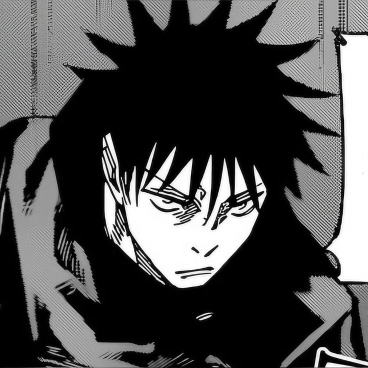

A Técnica das Dez Sombras permite que Megumi Fushiguro invoque diferentes shikigamis usando sombras como meio. Cada criatura possui habilidades únicas e pode ser usada em diferentes estratégias de batalha.
Clique em um dos shikigamis para ver sua habilidade.